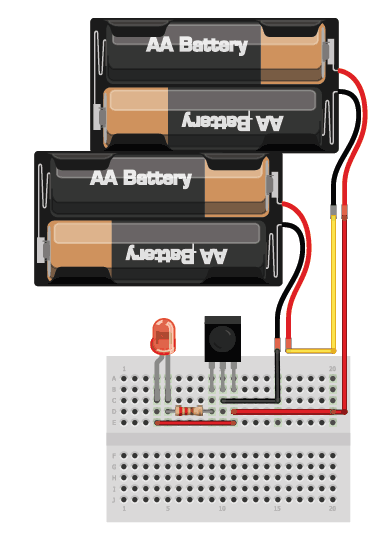
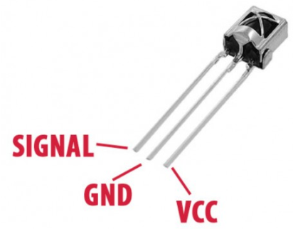
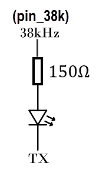
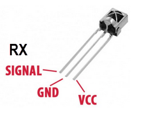
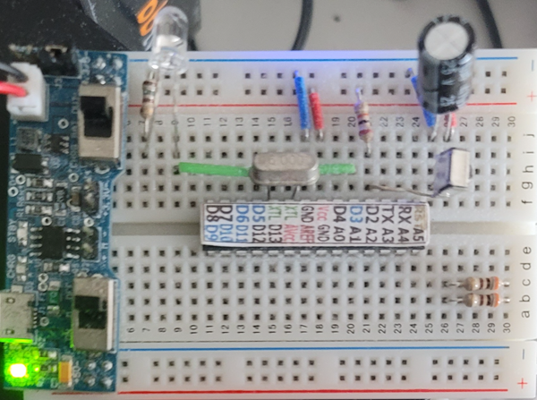
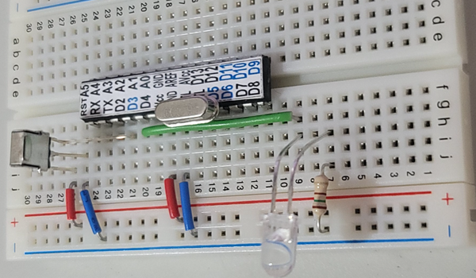
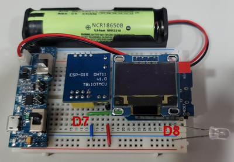
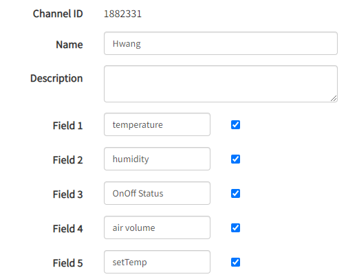
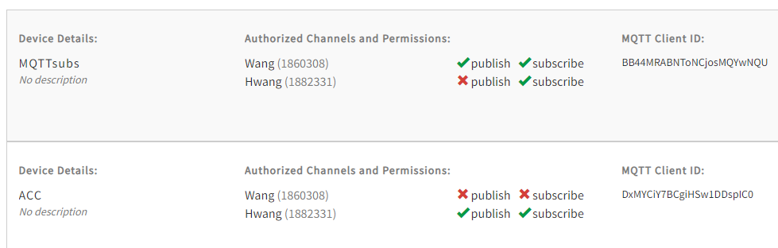

使用遙控器測試

  使用遙控器測試 |
| //紅外線發射 D8+150R+紅外線發射器陽極 陰極接地 void setup() { } void loop() { tone(8,38000); delay(1000);//不能太長 noTone(8); delay(1000); } //使用示波器觀看 |
|
 //發射端 TX HIGH 不發射紅外線 //TX LOW 發射38KHz 紅外線 #define pin_38k 7 int key1 = 12; int val; void setup() { pinMode(key1,INPUT_PULLUP); Serial.begin(1200); tone(pin_38k, 38000); } void loop() { val = digitalRead(key1); while (val == LOW) { Serial.print("1"); delay(250); val = digitalRead(key1); } } |
 //接收端 int LED1 = 9; String s; void setup() { Serial.setTimeout(50); Serial.begin(1200); pinMode(LED1,OUTPUT); } void loop() { if(Serial.available()) { s = Serial.readString(); if (s == "1") { digitalWrite(LED1,HIGH); delay(1000); digitalWrite(LED1,LOW); } } } |
| readString() 方法的行為是不論有無資料可讀取、也不論資料長度，都會等到 serial.setTimeout()
指定的工作時間(ms)截止後才返回。(若傳送字串長 timeout 時間需增加) 這段期間內讀取的資料全部放入字串 (String) 回傳。 String s=Serial.readString(); 如果沒有資料，則字串長度為 0 s.length 為 0 |
  |
| //接收轉發射 chiMei to bbTV //receive D2 //transmmit D3 #include <IRLibAll.h> //#include <IRLibRecvPCI.h> #include <IRLibDecodeBase.h> #include <IRLibSendBase.h> #include <IRLib_P04_RC6.h> #include <IRLibCombo.h> IRrecvPCI myReceiver(2); IRdecode myDecoder; IRsendRC6 mySender; uint32_t val; void setup() { Serial.begin(115200); myReceiver.enableIRIn(); } void loop() { if (myReceiver.getResults()) { myDecoder.decode(); //Decode it val=myDecoder.value; delay(300); if (val==0x807F906F) { mySender.send(0x8050A600,32);//key :0 } if (val==0x807F00FF) { mySender.send(0x8050A601,32);//key :1 } if (val==0x807F807F) { mySender.send(0x8050A602,32);//key :2 } if (val==0x807F40BF) { mySender.send(0x8050A603,32);//key :3 } if (val==0x807FC03F) { mySender.send(0x8050A604,32);//key :4 } if (val==0x807F20DF) { mySender.send(0x8050A605,32);//key :5 } if (val==0x807FA05F) { mySender.send(0x8050A606,32);//key :6 } if (val==0x807F609F) { mySender.send(0x8050A607,32);//key :7 } if (val==0x807FE01F) { mySender.send(0x8050A608,32);//key :8 } if (val==0x807F10EF) { mySender.send(0x8050A609,32);//key :9 } if (val==0x807FA857) { mySender.send(0x8050A65C,32);//key :EQ -->OK } if (val==0x807FD02F) { mySender.send(0x8050A6D2,32);//key :CH -->return } if (val==0x807F8877) { mySender.send(0x8050A621,32);//key :CH- } if (val==0x807F08F7) { mySender.send(0x8050A620,32);//key: CH+ } if (val==0x807FC837) { mySender.send(0x807FC837,32);//key :vol- } if (val==0x807F48B7) { mySender.send(0x807F48B7,32);//key :vol+ } if (val==0x807F58A7) { mySender.send(0x8050A65A,32);//key :<-- } if (val==0x807FD827) { mySender.send(0x8050A65B,32);//key :--> } if (val==0x807F30CF) { mySender.send(0x8050A60C,32);//key :on off } if (val==0x807F18E7) { mySender.send(0x8050A658,32);//key :up } if (val==0x807F9867) { mySender.send(0x8050A659,32);//key :down } myReceiver.enableIRIn(); //Restart receiver } } |
| ESP8266 NodeMCU – Controling IR Remote Control Infrared Receiver VS1838B(link) |
| 物聯網-wemos D1 Mini --- 利用ESP8266 IRremote庫實現空調控制(link) IRremoteESP8266(link) |
| #include <ESP8266WiFi.h> #include <IRremoteESP8266.h> #include <IRsend.h> #include <ir_Hitachi.h> IRHitachiAc344 _ac(D2); void setup() { Serial.begin(115200); Serial.println(""); _ac.begin(); delay(2000); _ac.on();//生成空調“開”的紅外碼 //_ac.off(); _ac.setMode(3);//1:送風 3:冷氣 5:除溼 6:暖氣 _ac.setTemp(26);//16~32 _ac.setFan(6);//1~6 5:AUTO _ac.setSwingV(1);//0:off 1:on _ac.setSwingH(1); //0:Auto 1:RightMost 2:Right 3:Middle 4:Left 5:LeftMost Serial.println(_ac.toString());//顯示發送的空調開機紅外編碼 _ac.send();//發送紅外命令 } void loop() { } |
| //Hitachi冷氣控制 OTA+SSID ROM #include <ESP8266WiFi.h> #include <WiFiClient.h> #include <ESP8266WebServer.h> #include <ESP8266mDNS.h> #include <ESP8266HTTPUpdateServer.h> #include <EEPROM.h> #include <IRsend.h> #include <ir_Hitachi.h> IRHitachiAc344 _ac(D2); unsigned int flag; const char* host = "espUpdate";//mDNS使用 String sssid = ""; String spass = ""; String Essid = ""; //EEPROM Network SSID String Epass = ""; String sEssid = ""; //EEPROM Network SSID String sEpass = ""; ESP8266WebServer server(80); ESP8266HTTPUpdateServer httpUpdater; String sNewNet = R"=====( <!DOCTYPE html> <html> <head> <meta charset="UTF-8" /> <meta name='viewport' content='width=device-width, initial-scale=1.0'/> <title>設定ROUTER連線</title> <style> body {text-align: center;} input[type=submit] {background-color: #50FF50;font-size: 24px;} input[type=text]{font-size: 24px;max-width: 200px;} p {font-size: 22px;} </style> </head> <body > <h1> 網路設定 </h1> <h1> <form action="/regSSID"> <input type="text" placeholder="請輸入SSID" name="SSID" value="" size="8"> <p> <input type="text" placeholder="請輸入PASSWORD" name="PASSWORD" value="" size="20"> </p> <p> <input type="submit" value="Submit"> </p> </form> </h1> </body> </html> )====="; String html_LedCon = R"=====( <!DOCTYPE html> <html> <head> <meta charset="UTF-8" /> <meta name='viewport' content='width=device-width, initial-scale=1.0'/> <title>LED Control</title> <style> body { background-color: linen;} input{ font-size:40px; width:300px; height:100px; margin-top: 10px; margin-bottom: 10px; margin-right: 10px; margin-left: 10px; border: 1px solid red; } div { color: blue; text-align:center; font-size:40px; } </style> </head> <body> <div> <p>Hitachi 冷氣控制<br></p> <form> <input type="submit" formaction="/1" value="開冷氣"> <input type="submit" formaction="/0" value="關冷氣"> </form> </div> </body> </html> )====="; void f_newNet() { server.send(200, "text/html", sNewNet); } void ap(){ for (int i = 0; i < 64; ++i) { EEPROM.write(i, 0); } EEPROM.commit(); WiFi.softAP("espAP"); server.on("/", f_newNet); server.on("/regSSID", f_regSSID);//form action server.on("/1", ledON);//與formaction 對應 server.on("/0", ledOFF); server.on("/acc", handleLedControl); server.begin(); } void st(){ readSSID(); if ( Essid.length() > 1 ) { WiFi.begin(Essid, Epass); while (WiFi.status() != WL_CONNECTED) { delay(500); } WiFi.softAP(String("IPGGx-"+String((WiFi.localIP().toString()))),""); server.on("/1", ledON);//與formaction 對應 server.on("/0", ledOFF); server.on("/acc", handleLedControl); //啟動mdns服務 MDNS.begin(host); //配置webserver為更新server httpUpdater.setup(&server); server.begin(); MDNS.addService("http", "tcp", 80); } } void readSSID(){ for (int i = 0; i < 32; ++i) { Essid += char(EEPROM.read(i)); } for (int i = 32; i < 64; ++i) //Reading Password { Epass += char(EEPROM.read(i)); } } String sFinishedhead = R"=====( <!DOCTYPE html> <html> <head> <meta charset="UTF-8" /> <meta name='viewport' content='width=device-width, initial-scale=1.0'/> <title>設定ROUTER連線</title> <style> body {text-align: center;} input[type=submit] {background-color: #50FF50;font-size: 24px;} input[type=text]{font-size: 24px;max-width: 200px;} p {font-size: 22px;} </style> </head> <body > )====="; String sFinishedend = R"=====( <p> 請確認SSID與PASS是否正確 </p> <p> 若不正確，請REST ESP再重新操作 </p> <p> 若正確，請REST ESP即可自動連網 </p> </body> </html> )====="; void f_regSSID() { if (server.hasArg("SSID") && server.hasArg("PASSWORD")){ sssid=server.arg("SSID");//Get SSID spass=server.arg("PASSWORD");//Get Password } for (int i = 0; i < sssid.length(); ++i) {EEPROM.write(i, sssid[i]);} for (int i = 0; i < spass.length(); ++i) {EEPROM.write(32+i, spass[i]);} EEPROM.commit(); for (int i = 0; i < 32; ++i) //Reading SSID { sEssid += char(EEPROM.read(i)); } for (int i = 32; i < 64; ++i) //Reading Password { sEpass += char(EEPROM.read(i)); } String sSSID="<p>SSID:"+sEssid+"</p>"; String sPASS="<p>Pass:"+sEpass+"</p>"; server.send(200,"text/html",sFinishedhead+sSSID+sPASS+sFinishedend); } /* 此處放你的程式碼 */ void handleLedControl() { server.send(200, "text/html", html_LedCon); } void ledON() { _ac.on();//生成空調“開”的紅外碼 _ac.setMode(3);//1:送風 3:冷氣 5:除溼 6:暖氣 _ac.setTemp(26);//16~32 _ac.setFan(6);//1~6 5:AUTO _ac.setSwingV(1);//0:off 1:on _ac.setSwingH(1); //0:Auto 1:RightMost 2:Right 3:Middle 4:Left 5:LeftMost Serial.println(_ac.toString());//顯示發送的空調開機紅外編碼 _ac.send();//發送紅外命令 /*In order to redirect the browser back to the LED-Control page, the ESP has to add a Location header to the response, and use a 303 HTTP status code. */ server.sendHeader("Location","/acc"); server.send(303); } void ledOFF() { //_ac.on();//生成空調“開”的紅外碼 _ac.off(); _ac.setMode(3);//1:送風 3:冷氣 5:除溼 6:暖氣 _ac.setTemp(26);//16~32 _ac.setFan(6);//1~6 5:AUTO _ac.setSwingV(1);//0:off 1:on _ac.setSwingH(1); //0:Auto 1:RightMost 2:Right 3:Middle 4:Left 5:LeftMost Serial.println(_ac.toString());//顯示發送的空調開機紅外編碼 _ac.send();//發送紅外命令 server.sendHeader("Location","/acc"); server.send(303); } void setup(){ _ac.begin(); delay(2000); /* 此處放你的程式碼 */ EEPROM.begin(64); readSSID(); WiFi.mode(WIFI_AP_STA); flag=0; while (WiFi.waitForConnectResult() != WL_CONNECTED) { WiFi.begin(Essid, Epass); delay(500); flag++; if (flag >=5) break; } if (flag>=4) ap(); else st(); } void loop(void) { /* 此處放你的程式碼 */ server.handleClient(); MDNS.update(); } |
| //Hitachi冷氣控制 OTA+SSID ROM +OLED //IRremoteESP8266(link) #include <ESP8266WiFi.h> #include <WiFiClient.h> #include <ESP8266WebServer.h> #include <ESP8266mDNS.h> #include <ESP8266HTTPUpdateServer.h> #include <EEPROM.h> #include <IRsend.h> #include <U8g2lib.h> #include <Wire.h> #include <ir_Hitachi.h> #include "DHTesp.h" U8G2_SSD1306_128X64_NONAME_F_HW_I2C u8g2(U8G2_R0, U8X8_PIN_NONE); IRHitachiAc344 _ac(D8); unsigned int flag; DHTesp dht; float t=0; float h=0; uint8_t getT; uint8_t getF; uint8_t getM; String sM; String sF; String acState; uint8_t draw_state = 0; const char* host = "espUpdate";//mDNS使用 String sssid = ""; String spass = ""; String Essid = ""; //EEPROM Network SSID String Epass = ""; String sEssid = ""; //EEPROM Network SSID String sEpass = ""; ESP8266WebServer server(80); ESP8266HTTPUpdateServer httpUpdater; String sNewNet = R"=====( <!DOCTYPE html> <html> <head> <meta charset="UTF-8" /> <meta name='viewport' content='width=device-width, initial-scale=1.0'/> <title>設定ROUTER連線</title> <style> body {text-align: center;} input[type=submit] {background-color: #50FF50;font-size: 24px;} input[type=text]{font-size: 24px;max-width: 200px;} p {font-size: 22px;} </style> </head> <body > <h1> 網路設定 </h1> <h1> <form action="/regSSID"> <input type="text" placeholder="請輸入SSID" name="SSID" value="" size="8"> <p> <input type="text" placeholder="請輸入PASSWORD" name="PASSWORD" value="" size="20"> </p> <p> <input type="submit" value="Submit"> </p> </form> </h1> </body> </html> )====="; String html_LedCon = R"=====( <!DOCTYPE html> <html> <head> <meta charset="UTF-8" /> <meta name='viewport' content='width=device-width, initial-scale=1.0'/> <title>Hitachi 空調控制</title> <style> body { background-color: linen;} input{ font-size:24px; width:100px; height:50px; margin-top: 10px; margin-bottom: 10px; margin-right: 10px; margin-left: 10px; border: 1px solid red; } div { color: blue; text-align:center; font-size:40px; } </style> </head> <body> <div> <p>Hitachi 冷氣控制<br></p> <form> <input type="submit" formaction="/1" value="開冷氣"> <input type="submit" formaction="/0" value="關冷氣"> <input type="submit" formaction="/tup" value="升溫"> <input type="submit" formaction="/tdn" value="降溫"> </form> </div> </body> </html> )====="; void f_newNet() { server.send(200, "text/html", sNewNet); } void ap(){ for (int i = 0; i < 64; ++i) { EEPROM.write(i, 0); } EEPROM.commit(); WiFi.softAP("espAP"); } void st(){ readSSID(); if ( Essid.length() > 1 ) { WiFi.begin(Essid, Epass); while (WiFi.status() != WL_CONNECTED) { delay(500); } WiFi.softAP(String("IPGGx-"+String((WiFi.localIP().toString()))),""); } } void readSSID(){ for (int i = 0; i < 32; ++i) { Essid += char(EEPROM.read(i)); } for (int i = 32; i < 64; ++i) //Reading Password { Epass += char(EEPROM.read(i)); } } String sFinishedhead = R"=====( <!DOCTYPE html> <html> <head> <meta charset="UTF-8" /> <meta name='viewport' content='width=device-width, initial-scale=1.0'/> <title>設定ROUTER連線</title> <style> body {text-align: center;} input[type=submit] {background-color: #50FF50;font-size: 24px;} input[type=text]{font-size: 24px;max-width: 200px;} p {font-size: 22px;} </style> </head> <body > )====="; String sFinishedend = R"=====( <p> 請確認SSID與PASS是否正確 </p> <p> 若不正確，請REST ESP再重新操作 </p> <p> 若正確，請REST ESP即可自動連網 </p> </body> </html> )====="; void f_regSSID() { if (server.hasArg("SSID") && server.hasArg("PASSWORD")){ sssid=server.arg("SSID");//Get SSID spass=server.arg("PASSWORD");//Get Password } for (int i = 0; i < sssid.length(); ++i) {EEPROM.write(i, sssid[i]);} for (int i = 0; i < spass.length(); ++i) {EEPROM.write(32+i, spass[i]);} EEPROM.commit(); for (int i = 0; i < 32; ++i) //Reading SSID { sEssid += char(EEPROM.read(i)); } for (int i = 32; i < 64; ++i) //Reading Password { sEpass += char(EEPROM.read(i)); } String sSSID="<p>SSID:"+sEssid+"</p>"; String sPASS="<p>Pass:"+sEpass+"</p>"; server.send(200,"text/html",sFinishedhead+sSSID+sPASS+sFinishedend); } /* 此處放你的程式碼 */ void handleLedControl() { server.send(200, "text/html", html_LedCon); } void ledON() { server.sendHeader("Location","/acc"); server.send(303); _ac.on();//生成空調“開”的紅外碼 _ac.setMode(3);//1:送風 3:冷氣 5:除溼 6:暖氣 _ac.setTemp(26);//16~32 _ac.setFan(4);//1~6 1:靜 2:微 3:弱 4:強 5:AUTO 6:最大 _ac.setSwingV(0);//0:off 1:on _ac.setSwingH(0); //0:Auto 1:RightMost 2:Right 3:Middle 4:Left 5:LeftMost //Serial.println(_ac.toString());//顯示發送的空調開機紅外編碼 _ac.send();//發送紅外命令 getT=_ac.getTemp(); getF=_ac.getFan(); getM=_ac.getMode(); switch(getF) { case 1: sF="靜"; break; case 2: sF="微"; break; case 3: sF="弱"; break; case 4: sF="強"; break; case 5: sF="自"; break; case 6: sF="大"; break; } switch(getM) { case 1: sM="送風"; break; case 3: sM="冷氣"; break; case 5: sM="除濕"; break; case 6: sM="暖氣"; break; } acState=sM+" "+String(getT)+"C "+sF; } void ledOFF() { _ac.off(); _ac.send();//發送紅外命令 acState="冷氣已關"; server.sendHeader("Location","/acc"); server.send(303); } void f_tup() { server.sendHeader("Location","/acc"); server.send(303); getT=_ac.getTemp(); if(getT>=32) getT=31; _ac.setTemp(getT+1);//16~32 _ac.send();//發送紅外命令 getT=_ac.getTemp(); acState=sM+" "+String(getT)+"C "+sF; } void f_tdn() { server.sendHeader("Location","/acc"); server.send(303); getT=_ac.getTemp(); if(getT<=16) getT=17; _ac.setTemp(getT-1);//16~32 _ac.send();//發送紅外命令 getT=_ac.getTemp(); acState=sM+" "+String(getT)+"C "+sF; } void drawP1(){ u8g2.setFont(u8g2_font_unifont_t_chinese1); u8g2.setCursor(0, 2); u8g2.print(String(acState).c_str()); //u8g2.print(String(getT).c_str()); //u8g2.setFont(u8g2_font_helvB12_tf); //u8g2.print("°"); //u8g2.setFont(u8g2_font_unifont_t_chinese1); //u8g2.print("C"); u8g2.setCursor(10, 25); u8g2.print(String("溫度:").c_str()); u8g2.print(String(t).c_str()); u8g2.setFont(u8g2_font_helvB12_tf); u8g2.print("°"); u8g2.setFont(u8g2_font_unifont_t_chinese1); u8g2.print("C"); u8g2.setCursor(10, 45); u8g2.print(String("濕度:").c_str()); u8g2.print(String(h).c_str()); u8g2.print('%'); // u8g2.setCursor(0, 50); // u8g2.print(String("111.9.21聰耀敬贈").c_str()); } void draw(void) { switch(draw_state) { case 0: drawP1(); break; // case 1: drawPicture(); break; // case 2: drawP2(); break; } } void setup(){ // Serial.begin(115200); pinMode(RX,OUTPUT); pinMode(TX,OUTPUT); digitalWrite(TX,1);//使用TX接腳當OLED VCC digitalWrite(RX,0);//使用RX接腳當OLED GND delay(2000); u8g2.begin(); u8g2.enableUTF8Print(); u8g2.setFont(u8g2_font_6x10_tf); u8g2.setFontRefHeightExtendedText(); u8g2.setDrawColor(1); u8g2.setFontPosTop(); u8g2.setFontDirection(0); u8g2.clearBuffer(); u8g2.setFont(u8g2_font_unifont_t_chinese1); // u8g2.setCursor(0, 2); // u8g2.print(String("冷氣控制").c_str()); acState="冷氣控制"; _ac.begin(); dht.setup(D7, DHTesp::DHT11); delay(2000); /* 此處放你的程式碼 */ EEPROM.begin(64); readSSID(); WiFi.mode(WIFI_AP_STA); flag=0; while (WiFi.waitForConnectResult() != WL_CONNECTED) { WiFi.begin(Essid, Epass); delay(500); flag++; if (flag >=5) break; } if (flag>=4) ap(); else st(); server.on("/", f_newNet); server.on("/regSSID", f_regSSID);//form action server.on("/1", ledON);//與formaction 對應 server.on("/0", ledOFF); server.on("/acc", handleLedControl); server.on("/tup", f_tup);//與formaction 對應 server.on("/tdn", f_tdn); //啟動mdns服務 MDNS.begin(host); //配置webserver為更新server httpUpdater.setup(&server); server.begin(); MDNS.addService("http", "tcp", 80); } void loop(void) { delay(dht.getMinimumSamplingPeriod()); t = dht.getTemperature(); h = dht.getHumidity(); u8g2.firstPage(); do { draw(); } while (u8g2.nextPage()); draw_state++; if ( draw_state >0 ){ draw_state = 0; delay(500); } /* 此處放你的程式碼 */ server.handleClient(); MDNS.update(); } |
| 01紅外線接收及發射之使用(link) |
| ESP8266 AC Controller(link) |
| ESP8266 WIFI AIR CONDITIONER REMOTE CONTROL(link) |
 //終極版 //Hitachi冷氣控制 OTA+SSID ROM +OLED+ Thingspeak MQTT 溫溼度未傳至thingspeak //lib:IRremoteESP8266(link) //lib:DHT_sensor_library_for_ESPx.zip(link) //lib:中文字形需使用此U8g2-2.27.6.zip(lib) 解壓縮後放置於libraries下(取代原u8g2)    bacp(link)(雲端硬碟) //thingspeak mychannel(link)
//終極版 //Hitachi冷氣控制 OTA+SSID ROM +OLED+ Thingspeak MQTT //lib:IRremoteESP8266(link) //lib:DHT_sensor_library_for_ESPx.zip(link) //lib:中文字形需使用此U8g2-2.27.6.zip(lib) 解壓縮後放置於libraries下(取代原u8g2) #include <ESP8266WiFi.h> #include <WiFiClient.h> #include <PubSubClient.h> #include "mqtt_secrets.h" #include "HTML.h" #include <ESP8266WebServer.h> #include <ESP8266mDNS.h> #include <ESP8266HTTPUpdateServer.h> #include <EEPROM.h> #include <IRsend.h> #include <U8g2lib.h> #include <Wire.h> #include <ir_Hitachi.h> #include "DHTesp.h" #define led 2 uint16_t mqttPort=1883; const char* s_topic="channels/1882331/subscribe/fields/field3"; const char* s_topic4="channels/1882331/subscribe/fields/field4"; const char* s_topic5="channels/1882331/subscribe/fields/field5"; const char* mqtt_server = "mqtt3.thingspeak.com"; U8G2_SSD1306_128X64_NONAME_F_HW_I2C u8g2(U8G2_R0, U8X8_PIN_NONE); IRHitachiAc344 _ac(D8); //ir unsigned int flag; int tempNow; int fanNow; DHTesp dht; float t=0; float h=0; uint8_t getT; uint8_t getF; uint8_t getM; uint8_t ifAP=1; String sM; String sF; static String acState; uint8_t draw_state = 0; const char* host = "mydns";//mDNS使用 String sssid = ""; String spass = ""; String Essid = ""; //EEPROM Network SSID String Epass = ""; String sEssid = ""; //EEPROM Network SSID String sEpass = ""; int tempThreshhold=28; ESP8266WebServer server(80); ESP8266HTTPUpdateServer httpUpdater; WiFiClient espclient; PubSubClient client(espclient); void f_newNet() { server.send(200, "text/html", sNewNet); } void ap(){ for (int i = 0; i < 64; ++i) { EEPROM.write(i, 0); } EEPROM.commit(); WiFi.softAP("espAP"); Serial.println("in AP mode"); } void st(){ readSSID(); if ( Essid.length() > 1 ) { WiFi.begin(Essid, Epass); while (WiFi.status() != WL_CONNECTED) { delay(500); } WiFi.softAP(String("IPGGx-"+String((WiFi.localIP().toString()))),""); } client.setServer(mqtt_server, mqttPort); client.setCallback(callback); } void readSSID(){ for (int i = 0; i < 32; ++i) { Essid += char(EEPROM.read(i)); } for (int i = 32; i < 64; ++i) //Reading Password { Epass += char(EEPROM.read(i)); } } void f_regSSID() { if (server.hasArg("SSID") && server.hasArg("PASSWORD")){ sssid=server.arg("SSID");//Get SSID spass=server.arg("PASSWORD");//Get Password } for (int i = 0; i < sssid.length(); ++i) {EEPROM.write(i, sssid[i]);} for (int i = 0; i < spass.length(); ++i) {EEPROM.write(32+i, spass[i]);} EEPROM.commit(); for (int i = 0; i < 32; ++i) //Reading SSID { sEssid += char(EEPROM.read(i)); } for (int i = 32; i < 64; ++i) //Reading Password { sEpass += char(EEPROM.read(i)); } String sSSID="<p>SSID:"+sEssid+"</p>"; String sPASS="<p>Pass:"+sEpass+"</p>"; server.send(200,"text/html",sFinishedhead+sSSID+sPASS+sFinishedend); ifAP=0; } /* 此處放你的程式碼 */ void handleLedControl() { server.send(200, "text/html", html_LedCon); } void accRon(){ _ac.on();//生成空調“開”的紅外碼 _ac.setMode(3);//1:送風 3:冷氣 5:除溼 6:暖氣 _ac.setTemp(26);//16~32 _ac.setFan(5);//1~6 1:靜 2:微 3:弱 4:強 5:AUTO 6:最大 _ac.setSwingV(0);//0:off 1:on _ac.setSwingH(0); //0:Auto 1:RightMost 2:Right 3:Middle 4:Left 5:LeftMost //Serial.println(_ac.toString());//顯示發送的空調開機紅外編碼 _ac.send();//發送紅外命令 getT=_ac.getTemp(); getF=_ac.getFan(); getM=_ac.getMode(); switch(getF) { case 1: sF="靜"; break; case 2: sF="微"; break; case 3: sF="弱"; break; case 4: sF="強"; break; case 5: sF="自動"; break; case 6: sF="超強"; break; } switch(getM) { case 1: sM="送風"; break; case 3: sM="冷氣"; break; case 5: sM="除濕"; break; case 6: sM="暖氣"; break; } acState=sM+" "+String(getT)+"C "+sF; } void accRoff(){ _ac.off(); _ac.send();//發送紅外命令 acState="冷氣已關"; } void AcON() { server.sendHeader("Location","/acc"); server.send(303); _ac.on();//生成空調“開”的紅外碼 _ac.setMode(3);//1:送風 3:冷氣 5:除溼 6:暖氣 _ac.setTemp(26);//16~32 _ac.setFan(5);//1~6 1:靜 2:微 3:弱 4:強 5:AUTO 6:最大 _ac.setSwingV(0);//0:off 1:on _ac.setSwingH(0); //0:Auto 1:RightMost 2:Right 3:Middle 4:Left 5:LeftMost //Serial.println(_ac.toString());//顯示發送的空調開機紅外編碼 _ac.send();//發送紅外命令 getT=_ac.getTemp(); getF=_ac.getFan(); getM=_ac.getMode(); switch(getF) { case 1: sF="靜"; break; case 2: sF="微"; break; case 3: sF="弱"; break; case 4: sF="強"; break; case 5: sF="自動"; break; case 6: sF="超強"; break; } switch(getM) { case 1: sM="送風"; break; case 3: sM="冷氣"; break; case 5: sM="除濕"; break; case 6: sM="暖氣"; break; } acState=sM+" "+String(getT)+"C "+sF; } void AcOFF() { _ac.off(); _ac.send();//發送紅外命令 acState="冷氣已關"; server.sendHeader("Location","/acc"); server.send(303); } void f_tup() { server.sendHeader("Location","/acc"); server.send(303); getT=_ac.getTemp(); if(getT>=32) getT=31; _ac.setTemp(getT+1);//16~32 _ac.send();//發送紅外命令 getT=_ac.getTemp(); acState=sM+" "+String(getT)+"C "+sF; } void f_tdn() { server.sendHeader("Location","/acc"); server.send(303); getT=_ac.getTemp(); if(getT<=16) getT=17; _ac.setTemp(getT-1);//16~32 _ac.send();//發送紅外命令 getT=_ac.getTemp(); acState=sM+" "+String(getT)+"C "+sF; } void drawP1(){ u8g2.setFont(u8g2_font_unifont_t_chinese1); u8g2.setCursor(0, 2); u8g2.print(String(acState).c_str()); //u8g2.print(String(getT).c_str()); //u8g2.setFont(u8g2_font_helvB12_tf); //u8g2.print("°"); //u8g2.setFont(u8g2_font_unifont_t_chinese1); //u8g2.print("C"); u8g2.setCursor(10, 25); u8g2.print(String("溫度:").c_str()); u8g2.print(String(t).c_str()); u8g2.setFont(u8g2_font_helvB12_tf); u8g2.print("°"); u8g2.setFont(u8g2_font_unifont_t_chinese1); u8g2.print("C"); u8g2.setCursor(10, 45); u8g2.print(String("濕度:").c_str()); u8g2.print(String(h).c_str()); u8g2.print('%'); // u8g2.setCursor(0, 50); // u8g2.print(String("111.9.21聰耀敬贈").c_str()); } void draw(void) { switch(draw_state) { case 0: drawP1(); break; // case 1: drawPicture(); break; // case 2: drawP2(); break; } } void callback(char* topic, uint8_t* payload, unsigned int length) { delay(1000); Serial.println(""); Serial.print("Message arrived ["); Serial.print(topic); Serial.print("] "); String payloadTemp; for (int i = 0; i < length; i++) { payloadTemp += (char)payload[i]; Serial.print((char)payload[i]); //Serial.println(length); } tempNow=payloadTemp.toInt(); if(tempNow>=10 && tempNow<=16) { fanNow=tempNow-10; Serial.println("tempNow"); Serial.println(tempNow); switch(fanNow) { case 1: {_ac.setFan(1);_ac.send();acState="靜"; break;} case 2: {_ac.setFan(2);_ac.send();sF="微"; break;} case 3: {_ac.setFan(3);_ac.send();sF="弱"; break;} case 4: {_ac.setFan(4);_ac.send();sF="強"; break;} case 5: {_ac.setFan(5);_ac.send();sF="自動"; break;} case 6: {_ac.setFan(6);_ac.send();sF="超強"; break;} } acState=sM+" "+String(getT)+"C "+sF; } if(tempNow>=17 && tempNow<=32) { _ac.setTemp(tempNow);//16~32 _ac.send();//發送紅外命令 getT=_ac.getTemp(); acState=sM+" "+String(getT)+"C "+sF; } Serial.println(""); Serial.print("tempNow="); Serial.print(tempNow); //if (tempNow>=tempThreshhold ) { if (tempNow==1 ) { accRon(); digitalWrite(led, LOW); } else if(tempNow==0 ) { accRoff(); digitalWrite(led, HIGH); } } void reconnect() { while (!client.connected()) { Serial.println("Attempting MQTT connection..."); if (client.connect(SECRET_MQTT_CLIENT_ID,SECRET_MQTT_USERNAME, SECRET_MQTT_PASSWORD)) { Serial.println("connected"); client.subscribe(s_topic,0); client.subscribe(s_topic4,0); client.subscribe(s_topic5,0); } else { Serial.print("failed, rc="); Serial.print(client.state()); Serial.println(" try again in 5 seconds"); // Wait 5 seconds before retrying delay(5000); } } } void setup(){ Serial.begin(115200); pinMode(led,OUTPUT); Serial.println(""); pinMode(RX,OUTPUT); pinMode(TX,OUTPUT); digitalWrite(TX,1);//使用TX接腳當OLED VCC digitalWrite(RX,0);//使用RX接腳當OLED GND delay(2000); u8g2.begin(); u8g2.enableUTF8Print(); u8g2.setFont(u8g2_font_6x10_tf); u8g2.setFontRefHeightExtendedText(); u8g2.setDrawColor(1); u8g2.setFontPosTop(); u8g2.setFontDirection(0); u8g2.clearBuffer(); u8g2.setFont(u8g2_font_unifont_t_chinese1); acState="冷氣控制"; _ac.begin(); dht.setup(D7, DHTesp::DHT11); delay(2000); EEPROM.begin(64); readSSID(); WiFi.mode(WIFI_AP_STA); flag=0; while (WiFi.waitForConnectResult() != WL_CONNECTED) { WiFi.begin(Essid, Epass); delay(500); flag++; if (flag >=5) break; } if (flag>=4) ap(); else {st(); ifAP=0;} server.on("/", f_newNet); server.on("/regSSID", f_regSSID);//form action server.on("/1", AcON);//與formaction 對應 server.on("/0", AcOFF); server.on("/acc", handleLedControl); server.on("/tup", f_tup);//與formaction 對應 server.on("/tdn", f_tdn); MDNS.begin(host);//啟動mdns服務 httpUpdater.setup(&server); //配置webserver為更新server server.begin(); MDNS.addService("http", "tcp", 80); } void loop(void) { delay(dht.getMinimumSamplingPeriod()); t = dht.getTemperature(); h = dht.getHumidity(); u8g2.firstPage(); do { draw(); } while (u8g2.nextPage()); draw_state++; if ( draw_state >0 ){ draw_state = 0; delay(500); } if(ifAP==0){ if (!client.connected()) { reconnect(); } client.loop();} server.handleClient(); MDNS.update(); } |